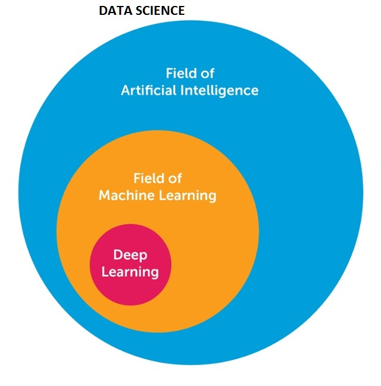

Overview¶
These days, it seems whenever technology is mentioned, there are buzzwords to boot like AI, Data Science, Machine Learning, Deep Learning etc...
In order to better understand the concepts above, I would like to clarify those words and their connections.
Artificial Intelligence¶
Artificial intelligence (AI) is therefore, based on the idea of the capability of a machine or computer program to think(reason), understand and learn like humans.
From the definition of intelligence, we can also say that artificial Intelligence is the study of the possibility of creating machines able to apply knowledge received from data in manipulating the environment.
In simple terms
Artificial Intelligence is reproducing human intelligence in machines, especially computer systems through learning , reasoning and self-correction.
Broadly, AI can be thought to have evolved parallelly in two main directions: Expert Systems and ML. Focusing on the latter, ML extracts features from training dataset(s) and make models with minimal or no human intervention. These models provide predicted outputs based on test data. DL, being a sub-division of ML, extracts more abstract features from a larger set of training data mostly without human supervision. RL, being the other sub-division of ML, is inspired by psychology. It provides a software agent which gathers experience based on interactions with the environment through some actions and aims to maximize the cumulative performance 1.
Genetic Algorithm, Fuzzy Logic are also part of artificial intelligence.
Machine Learning¶
Artificial intelligence is very vast. Machine learning(ML) is a subset of Artificial Intelligence.
Machine learning(ML) is a set of statistical tools to learn from data. The nucleus of ML is in teaching computers how to learn and make predictions from data without necessarily being programmed.
Deep Learning¶
Deep learning is a subset of machine learning in which data goes through multiple number of non-linear transformations to obtain an output.
‘Deep’ refers to many steps in this case. The output of one step is the input for another step, and this is done continuously to get a final output. All these steps are not linear.
Seen a photo of a neuron from the human brain? Artificial neural networks are built similarly, with neural nodes connected like a web.
Deep learning algorithms require very powerful machines and is very useful in detecting patterns from input data.
Data Science¶
Data science has an intersection with artificial intelligence but is not a subset of artificial intelligence.
Data science is the study of an aroused curiosity in any given field, the extraction of data from a large source of data related to the question in mind, processing data, analysing and visualising this data, so as to make meaning out of it for IT and business strategies.
In simple terms
It is understanding and making sense of data. A lot of tools are used in data science. They include statistical tools, probabilistic tools, linear and metric algebra, numerical optimisation and programming.
Conclusion¶
Data Science is not fully Artificial intelligence, however portions of Data science intersect with Artificial intelligence. 
-
Mufti Mahmud, M. Shamim Kaiser, Amir Hussain, Stefano Vassanelli. 7 Jan 2018. Applications of Deep Learning and Reinforcement Learning to Biological Data ↩